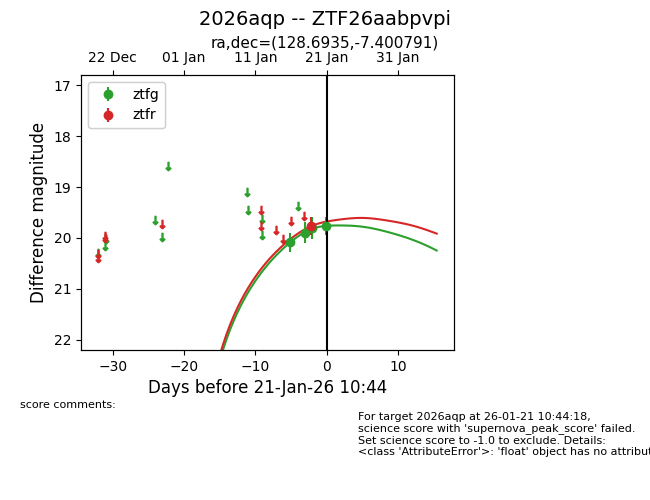
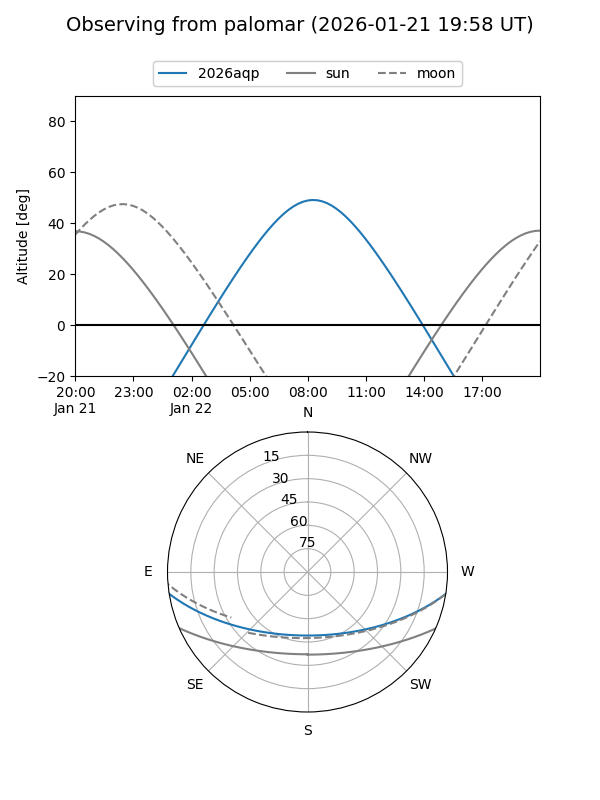
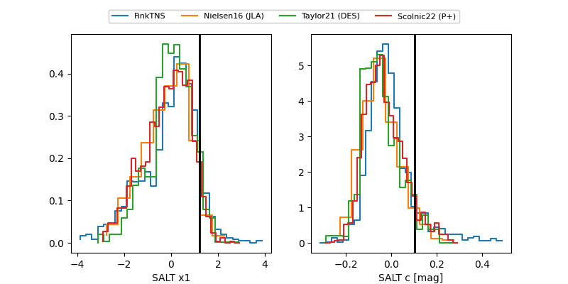

2026aqp
Target 2026aqp at 2026-01-25 08:41
Aliases and brokers:
FINK: link
Lasair: link
ALeRCE: link
TNS: link
YSE: link
alt names
ZTF26aabpvpi (ztf,fink_ztf)
2026aqp (tns,yse)
Coordinates:
equatorial (ra, dec) = 128.6935,-7.40079
equatorial (HMS+DMS) = 08:34:46.44,-07:24:02.85
galactic (l, b) = (232.1813,+19.01772)
Flags:
Photometry:
last ztfg=19.81, ztfr=19.49
6 ztfg, 3 ztfr detections
Lightcurve

Visibility


Additional plots
